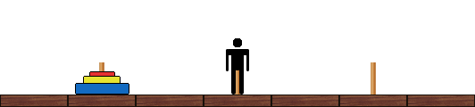

Drunken Tower of Hanoi
Problem 497
Bob is very familiar with the famous mathematical puzzle/game, "Tower of Hanoi," which consists of three upright rods and disks of different sizes that can slide onto any of the rods. The game begins with a stack of n disks placed on the leftmost rod in descending order by size. The objective of the game is to move all of the disks from the leftmost rod to the rightmost rod, given the following restrictions:
- Only one disk can be moved at a time.
- A valid move consists of taking the top disk from one stack and placing it onto another stack (or an empty rod).
- No disk can be placed on top of a smaller disk.
Moving on to a variant of this game, consider a long room k units (square tiles) wide, labeled from 1 to k in ascending order. Three rods are placed at squares a, b, and c, and a stack of n disks is placed on the rod at square a.
Bob begins the game standing at square b. His objective is to play the Tower of Hanoi game by moving all of the disks to the rod at square c. However, Bob can only pick up or set down a disk if he is on the same square as the rod / stack in question.
Unfortunately, Bob is also drunk. On a given move, Bob will either stumble one square to the left or one square to the right with equal probability, unless Bob is at either end of the room, in which case he can only move in one direction. Despite Bob's inebriated state, he is still capable of following the rules of the game itself, as well as choosing when to pick up or put down a disk.
The following animation depicts a side-view of a sample game for n = 3, k = 7, a = 2, b = 4, and c = 6:

Let E(n,k,a,b,c) be the expected number of squares that Bob travels during a single optimally-played game. A game is played optimally if the number of disk-pickups is minimized.
Interestingly enough, the result is always an integer. For example, E(2,5,1,3,5) = 60 and E(3,20,4,9,17) = 2358.
Find the last nine digits of ∑1≤n≤10000 E(n,10n,3n,6n,9n).